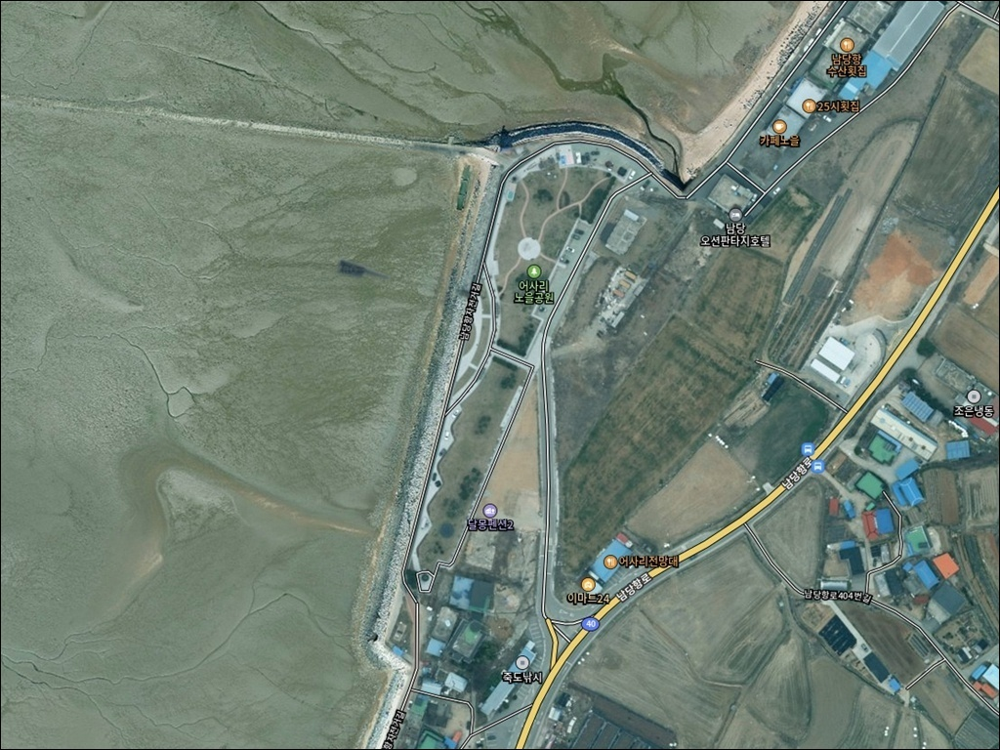
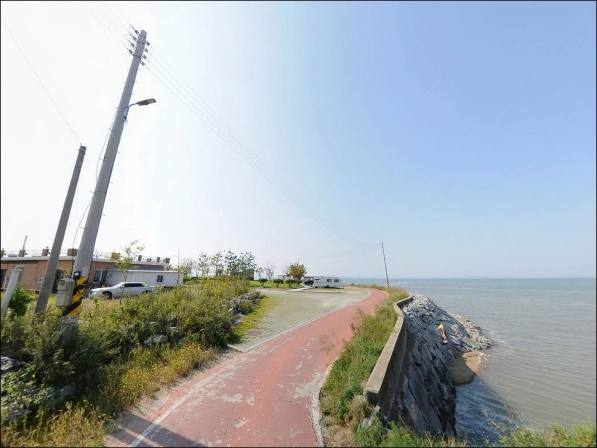
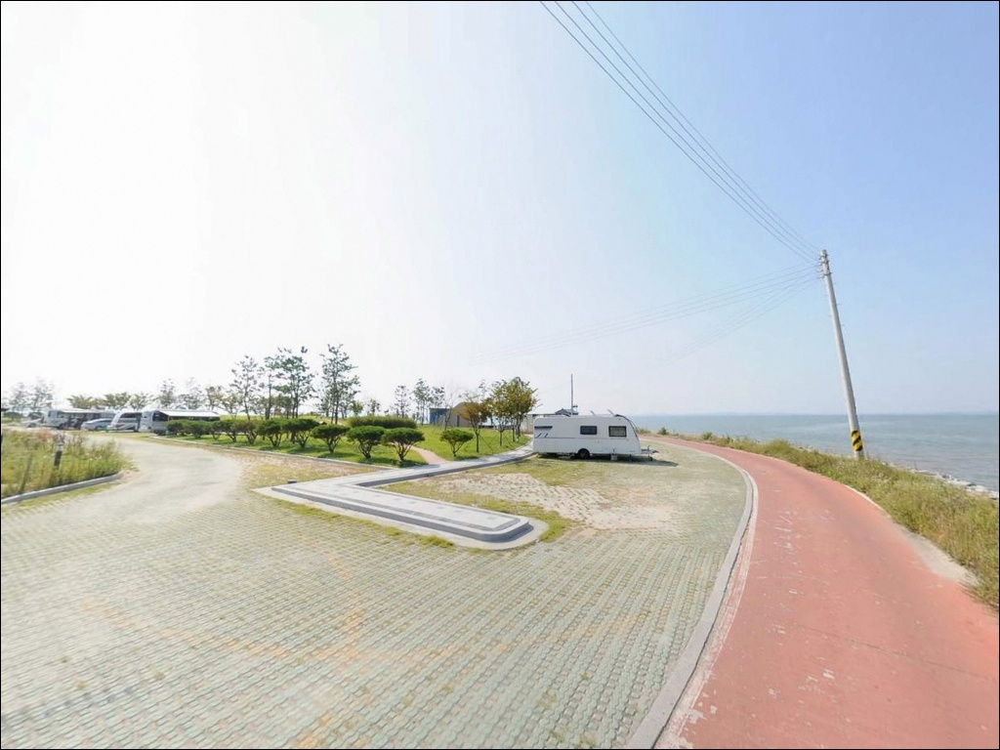
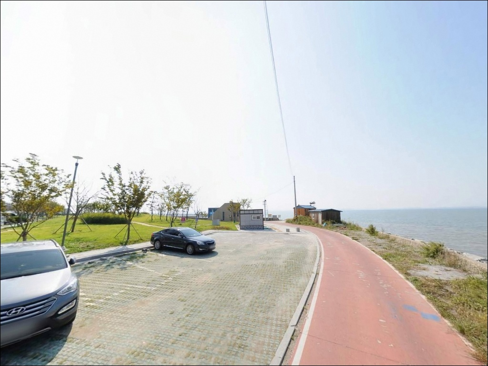
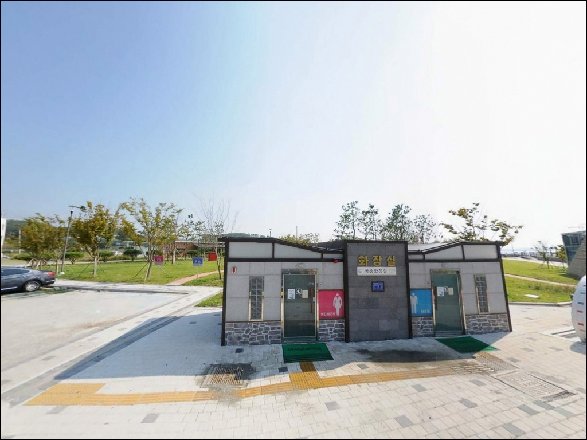
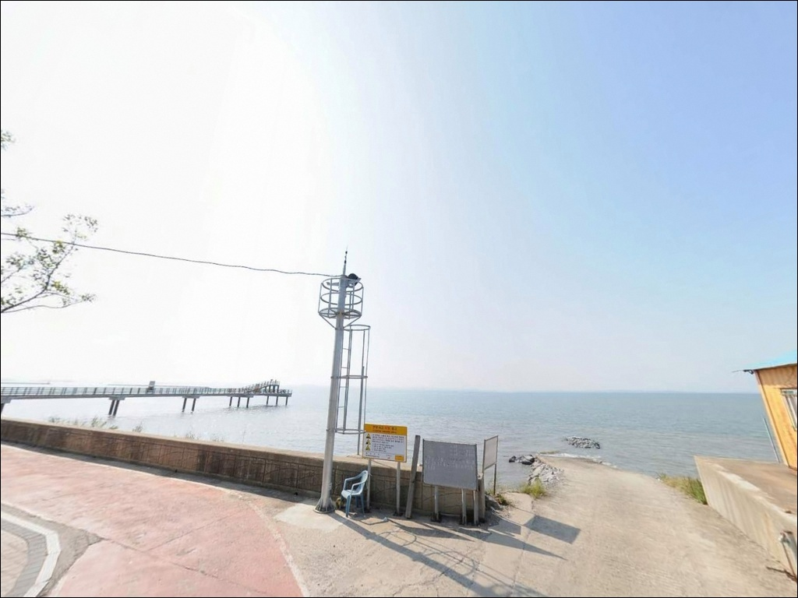
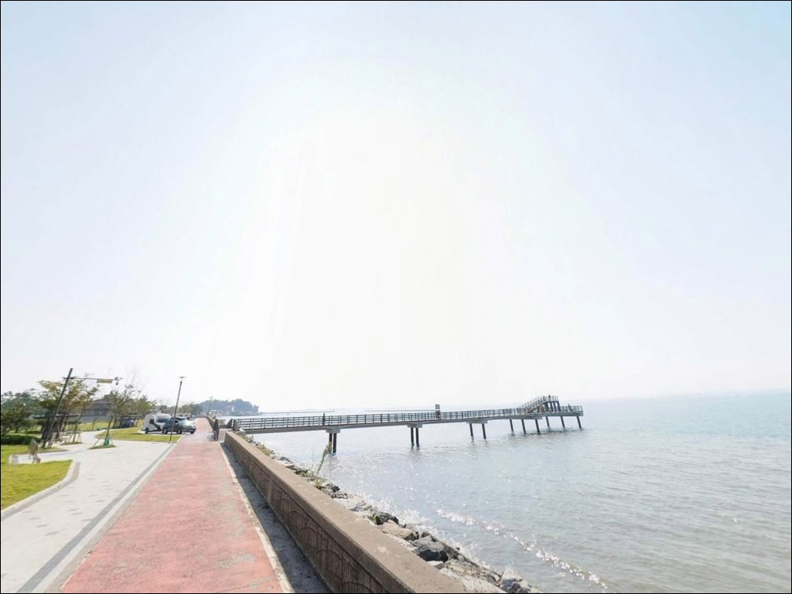
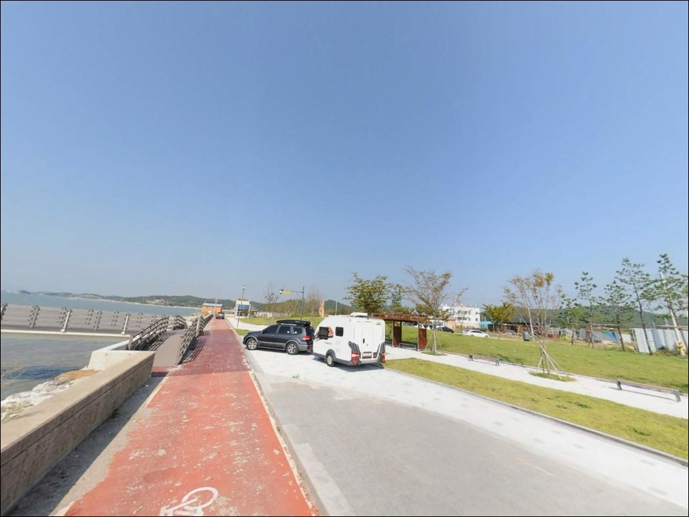
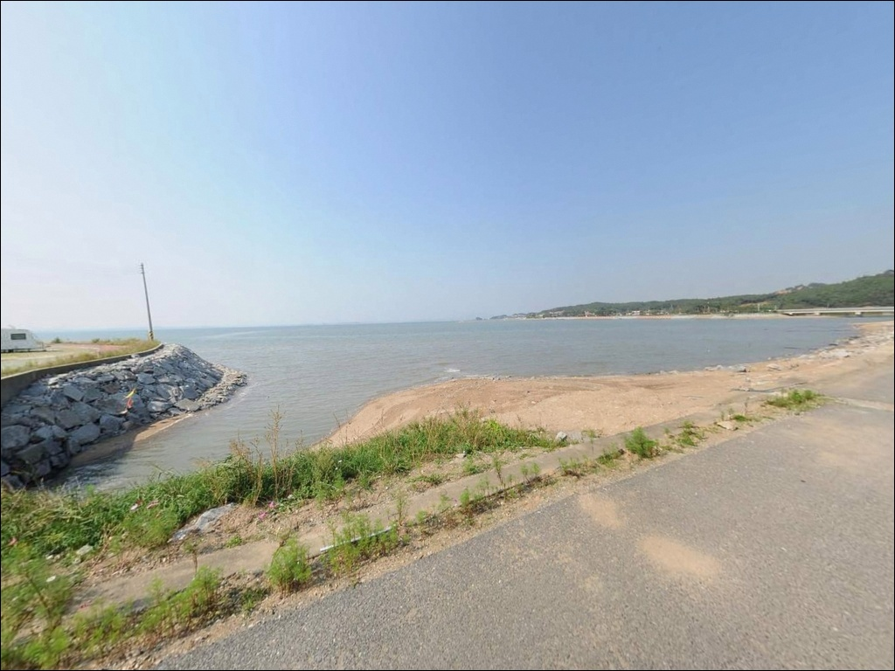

어사리 노을공원, 충남 홍성군 노을 명소 차박, 낚시 장소
이 페이지에는 광고(제휴 링크 포함)가 있으며, 광고 링크를 통해 구매하면 운영자가 판매 수익 또는 수수료를 받을 수 있습니다. 포인트 사진: 카카오맵 스카이뷰·로드뷰. 이 페이지의 지도·사진 이미지는 카카오맵의 실제 서비스 이미지와 다를 수 있습니다.


포인트 안내
어사리 노을공원
충남 홍성군 서부면 어사리 490-1
어사리 노을공원에서 낚시를 계획할 때
가장 많이 틀리는 판단은
물때 확인을 건너뛰는 것입니다.
천수만 내만 갯벌 지형 특성상
간조 타이밍에 진입하면
발 아래 바닥이 드러나
낚시 자리 자체가 사라집니다.
만조 전후 물이 차오르는 시간대에 맞춰야
데크 아래로 수면이 형성되고
원투 채비가 의미를 가지는 구조입니다.
방문 시각을 물때에 맞추지 않으면
공원 산책이 전부가 될 수 있습니다.
이 글은 어사리 노을공원의
진입 환경, 차박 여건, 지형 기반 낚시 조건,
인근 대안 포인트까지
낚시꾼 관점에서 정리한 내용을 담습니다.
조황 단정이나 특정 어종 보장은
이 글의 범위에 포함되지 않습니다.

1. 진입 동선과 주차 여건
어사리 노을공원은 남당항자전거길을 따라
해안도로로 접근하는 구조입니다.
포장도로가 공원 입구까지 이어져 있어
급경사나 비포장 구간은 없는 편입니다.
승용차와 소형 SUV 기준으로
진입 자체에 큰 어려움은 없습니다.
공원 내 공용 주차장이 조성되어 있어
주차 공간은 확보된 구조입니다.
회차 공간도 주차장 범위 안에서 가능한 수준으로,
대형 차량이라도 회차에 무리는 없는 편입니다.
다만 주말과 관광 성수기에는
방문객 차량으로 주차 공간이 줄어드는 경우가
있으니 이른 시간 진입이 유리합니다.
공원 특성상 산책로와 포토존 이용객이
낮 시간대에 유동하는 곳입니다.
낚시 자리를 잡을 때
보행자 동선과 캐스팅 방향이
겹치지 않도록 먼저 확인하는 것이 기본 매너입니다.

2. 차박 환경과 야간 체류 여건
차박이란 차량을 숙박 공간으로 활용하며
현장에서 하룻밤 머무는 여행 방식입니다.
어사리 노을공원은 공원 주차장을 기반으로
차박 체류 가능성이 있는 곳이지만,
관광지 성격의 공원이라
완전한 노지 차박 환경과는 분위기가 다릅니다.
노을 감상 명소로 알려진 곳이라
해 질 무렵에는 방문객이 몰리는 편입니다.
야간에는 상대적으로 한산해지지만,
공원 시설 특성상 조명이 설치된 구간이 있어
완전 암흑 환경을 기대하기는 어렵습니다.
낚시 후 조용히 체류하는 용도로는
활용 가능한 수준입니다.
천수만 내만에 위치해 외해 직접 노출은 없는 편이라
파도 소음이나 너울 영향은 크지 않습니다.
다만 공원 내 차박 행위 허용 여부는
현장 안내 표지판이나 홍성군청에
사전 확인하는 것이 먼저입니다.


3. 주변 편의시설 및 인프라 현황
어사리 노을공원 내에는 공중화장실과
손·발 세면대가 설치되어 있습니다.
산책로, 광장, 전망대, 휴게시설도 갖춰진
조성형 공원 구조입니다.
기본 편의시설 면에서는
어촌 소형 선착장보다 여건이 나은 편입니다.
공원 인근 어사리 어량항 상가지구에
식당과 숙박업소가 위치해 있습니다.
남쪽으로 약 1km 거리의 남당항까지 이동하면
대하·전어·쭈꾸미 취급 횟집과 수산물 판매점이
집중되어 있어 식사 해결이 가능합니다.
편의점은 사전에 내비로 직접 확인하고
진입하는 것이 안전합니다.
출조 전 식수, 낚시 소품, 얼음은
미리 준비해 가는 편이 현실적입니다.
남당항에서 기본 생필품을
보충하는 동선도 가능합니다.

4. 방문 전 반드시 확인할 준비사항
이 포인트에서 가장 먼저 챙겨야 할 것은
물때입니다.
천수만 내만 갯벌 지형은
조수 간만의 차가 크고
간조 시 낚시 공간 자체가 사라집니다.
바다타임에서 홍성군 서부면 기준 물때를 확인하고
만조 전후 1~2시간을 낚시 가능 시간대로
설정한 뒤 출발 시각을 맞춰야 합니다.
데크형 산책로에서 낚시를 시도할 경우
바닥이 미끄럽고 난간 여건이 다를 수 있습니다.
야간 입장 시에는 헤드랜턴을 반드시 준비하고,
구명조끼는 물가 인접 시 상시 착용이 기본입니다.
관광객 이동이 많은 구간에서는
캐스팅 전 주변 반경 확인이 먼저입니다.
낚시 행위 허용 여부는
현장 안내 표지판에서 확인하는 것이 원칙입니다.
공원 시설물 보호 차원에서 제한 구간이
별도로 지정되어 있을 수 있습니다.
출조 전 홍성군청 체육관광과에
문의하는 것도 좋은 사전 준비입니다.

5. 물때를 맞춰야 낚시가 시작되는 갯벌 지형 분석
어사리 노을공원은 천수만 내만에 위치한
갯벌형 해안입니다.
남당리에서 어사리까지 이어지는 해안선에
백사장과 갯벌이 함께 펼쳐지는 구간으로,
방파제나 테트라포트는 없는 구조입니다.
데크형 전망대가 물쪽으로 뻗어 있는 형태라
낚시 공간은 이 데크 위 또는 연안 가장자리가 됩니다.
수심은 완만하게 깊어지는 모래·갯벌 혼합 지형입니다.
간조 시에는 바닥이 드러나 낚시가 불가능하고,
만조 전후에 수면이 올라오며
데크 아래로 물이 형성되는 구조입니다.
천수만 내만 갯벌 포인트에서는
물때 타이밍이 낚시 가능 여부 자체를 결정하는
핵심 변수입니다.
조류는 외해 대비 약한 편이며
내만 구조상 파도 영향도 적습니다.
채비 컨트롤 자체는 어렵지 않은 환경이지만
수심이 얕아 채비를 가능한 멀리 보내는 방식이
이 지형에서는 유리합니다.
출조 전 최신 조황은 꼭 검색해 보시기 바랍니다.
(검색어: 남당항 조황, 어사리 낚시, 홍성 천수만 낚시)


6. 이 포인트에 어울리는 낚시 스타일
원투낚시가 이 지형에서 가장 현실적인 선택입니다.
만조 전후 수면이 올라오는 타이밍에
채비를 최대한 멀리 보내
모래·갯벌 혼합 바닥층을 노리는 방식입니다.
망둥어, 붕장어, 숭어 계열이
이 지형에서 기대해 볼 수 있는 어종이며,
계절에 따라 농어의 내만 접근도 있는 구간입니다.
망둥어낚시는 이 포인트 지형 조건과
가장 잘 맞는 스타일입니다.
망둥어낚시란 갯벌이나 연안 바닥에 서식하는
망둥어를 짧은 채비로 노리는 생활 낚시 방식입니다.
간조 전후 수위가 낮을 때
갯벌 경계부를 노리는 짧은 채비로
손맛을 볼 수 있는 방식입니다.
만조 시 수면이 충분히 올라온 상태라면
루어낚시도 시도해볼 수 있습니다.
데크 가장자리에서 미노우 계열 루어로
표층~중층을 탐색하는 방식이 어울립니다.
천수만 해역은 계절에 따라 숭어 무리가
내만으로 들어오는 구간이 있어,
숭어 루어는 가을 시즌을 전후해 기대해볼 만합니다.
가을 시즌(9~10월)에는 천수만 일대
갑오징어·주꾸미 시즌이 맞물립니다.
어사리 노을공원 공원 전면부에서
에깅을 시도하는 낚시인도 있으나,
구조물이 없는 개방형 갯벌 지형이라
에깅보다는 원투·루어 방식이 이 포인트에 더 어울립니다.
에깅을 메인으로 한다면 남당항 방파제가 더 유리합니다.
어사리 노을공원 낚시는
인근 남당항 방파제와 동선을 묶어야
출조 효율이 높아지는 구조입니다.

7. 대안 포인트와 플랜 B 동선
어사리 노을공원에서 낚시 여건이 기대에 미치지 못할 때
가장 먼저 이동할 곳은 남당항입니다.
남당항은 공원에서 남쪽으로 약 1km 거리의
국가어항으로, 방파제와 외항 구조를 갖추고 있습니다.
원투낚시와 루어낚시 모두 운용 가능하고
선상 출조편도 다수 있어
어사리 노을공원과는 전혀 다른 낚시 환경을 제공합니다.
남당항 방파제는 수심과 조류 조건이
어사리 노을공원보다 낚시에 유리한 구조입니다.
처음 이 권역을 찾는다면
남당항을 먼저 탐색한 뒤
어사리 노을공원을 서브 포인트로 설정하는 동선이
효율적입니다.
같은 서부면 해안선에 궁리항도 있습니다.
남당항보다 한적한 소형 어항으로
조용한 환경을 원할 때 대안으로 살펴볼 수 있습니다.
어사리 노을공원 도보권에는 어사리항이 있어
가까운 선착장 구조를 확인해보는 것도
플랜 B의 하나입니다.

노을과 낚시를 함께 챙기려면,
물때부터 계산하십시오
원투낚시나 생활 낚시를 즐기는 낚시인이라면
어사리 노을공원은 물때만 맞으면
나쁘지 않은 조건을 갖춘 곳입니다.
방파제가 없는 갯벌형 연안이라
루어나 에깅을 메인으로 하기에는 맞지 않지만,
만조 전후 짧은 원투 세션을 노리거나
망둥어 손맛을 즐기려는 가족 낚시 출조로는
어울리는 환경입니다.
반면 물때 계산 없이 간조 타이밍에 도착하거나
본격적인 낚시 성과를 기대하고 단독 출조지로 삼는다면
아쉬운 결과로 끝날 수 있습니다.
남당항과 묶어 동선을 짜는 방식이
이 권역을 제대로 활용하는 방법입니다.
물때를 맞춰 진입하고,
낚시 후 천수만 노을을 바라보며
공원 주차장에서 하룻밤 머무는 차박 여행자라면
한 번쯤 들러볼 만한 서해 내만 포인트입니다.